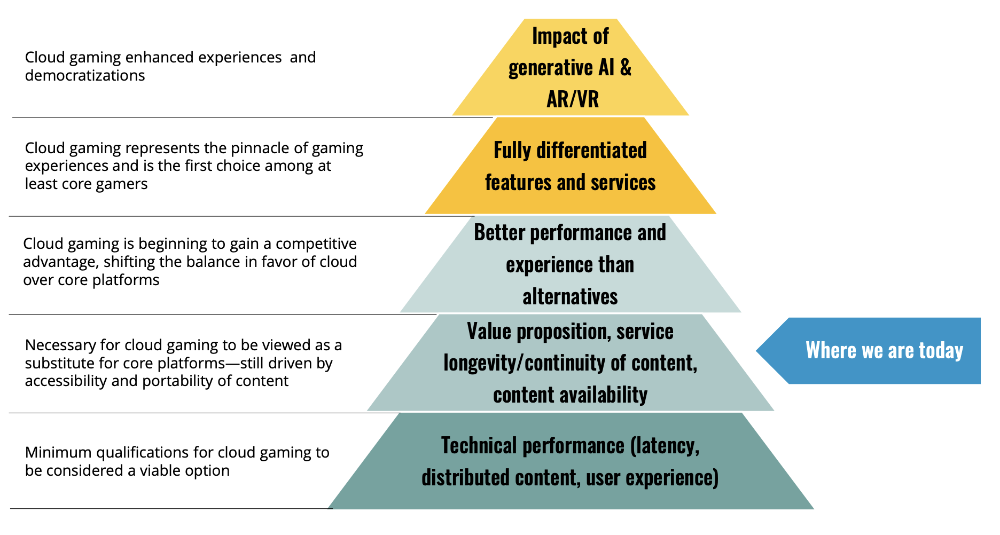

Cloud Computing: From Physical Cartridges to Infinite Game Libraries
Video games once relied entirely on physical media → cartridges, discs, and local installations. But as
cloud infrastructure expanded, the need for powerful personal hardware began to fade. Cloud gaming,
also known as gaming on demand, allows the game to run on remote servers while streaming the visual and
audio output to the player's device. This shift makes it possible for anyone with a stable connection to
enjoy high-performance gaming without owning a high-end console or PC.
Early cloud gaming attempts, such as OnLive and Gaikai in the 2010s, faced major
challenges like latency, unstable connections, and bandwidth limits. As network technology improved
- faster broadband, better compression, and globally distributed data centers - cloud gaming
experienced a resurgence. According to ABI Research, advances in cloud infrastructure and the spread
of 5G are setting the stage for the next era of large-scale, low-latency cloud-based gaming.
Key Highlights:
Hierarchy of Needs for Cloud Gaming
To succeed, cloud gaming must evolve through several layers of development - starting from a strong
technical foundation and building toward full-scale user adoption. At its core, the system relies on
stable infrastructure, low latency, and seamless content delivery across regions. Once those basics
are achieved, services can focus on richer libraries, player retention, and delivering experiences
that truly compete with traditional local gaming, as shown in Figure 1.

Figure 1: Hierarchy of Needs for Cloud Gaming -
Source: ABI Research
Today, cloud gaming is reshaping the way games are distributed and experienced. Players can stream titles
instantly on phones, laptops, or smart TVs, without lengthy downloads or expensive hardware. This marks a
fundamental shift in gaming history - from "owning a game for my console" to "accessing my games anywhere,
anytime."
However, success in this field depends on finding the right balance between technology and
market forces. Companies must manage infrastructure costs, performance optimization, and
innovation while ensuring the service remains affordable and appealing to players, as shown in Figure
2.
Figure 2: Cloud Gaming - Balancing Technology and Market Factors -
Source: ABI Research